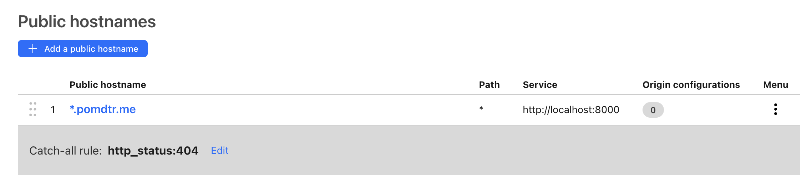

Getting started
Installation
If you want your apps to be available on the internet, you'll need to buy a domain name, and point it to your server. You can find more information on how to do this in the documentation.
If you prefer your to keep your apps local to your device, you can learn how to host your apps as https://<app>.localhost address in this guide. This option does not requires a domain name (or a server), but your app will only be available on your local device.
Using smallweb
Every smallweb app is defined as a folder in the ~/www directory. The folder name will be used as the subdomain of the website. Dependending on your configuration, the ~/www/demo folder could be served at:
https://demo.localhosthttps://demo.<your-domain>(ex: https://demo.pomdtr.me)
Hosting a web app
Every folder in the ~/www directory is served statically by default. If the folder contains an index.html file, it will be served as the default page. Otherwise, the folder content will be listed.
If you want to serve dynamic content, just create a file called main.[js,ts,jsx,tsx] at the root of the folder. The file should export a default object with a fetch method that takes a Request object as argument, and returns a Response object.
// File: ~/www/demo/main.ts
export default {
fetch(request: Request) {
const url = new URL(request.url);
const name = url.searchParams.get("name") || "world";
return new Response(`Hello, ${name}!`, {
headers: {
"Content-Type": "text/plain",
},
});
},
}
Smallweb use the deno runtime to evaluate the server code. You get typescript and jsx support out of the box, and you can import any module from the npm and jsr registry by prefixing the module name with npm: or jsr:.
As an example, the following code snippet use the @hono/hono extract params from the request url, and render jsx:
// File: ~/www/hono/main.tsx
/** @jsxImportSource jsr:@hono/hono/jsx **/
import { Hono } from "@hono/hono";
const app = new Hono();
app.get("/", c => c.html(<h1>Hello, world!</h1>));
app.get("/:name", c => c.html(<h1>Hello, {c.req.param("name")}!</h1>));
export default app;
To install this app, just copy-paste the snippet in your ~/www/hono folder, and open https://hono.localhost in your browser.
No need to start a development server, or to compile the code. Smallweb will take care of everything for you.
Registering a CLI command
To add a cli command to your app, just create a file called cli.[js,ts,jsx,tsx] in the folder.
Here is an example of a simple cli command:
// File: ~/www/demo/cli.ts
import { parseArgs } from "jsr:@std/cli/parse-args";
const flags = parseArgs(Deno.args, {
string: ["name"],
});
console.log(`Hello, ${flags.name || "world"}!`);
To run the command, you can use the smallweb run command:
$ smallweb run demo --name smallweb
Hello, smallweb!
Of course, you can define both an main.ts and a cli.ts file in the same folder.
Setting env variables
You can set environment variables for your app by creating a file called .env in the folder.
Here is an example of a .env file:
BEARER_TOKEN=SECURE_TOKEN
Use the Deno.env.get method to access the environment variables in your app:
// File: ~/www/demo/main.ts
export default function (req: Request) {
if (req.headers.get("Authorization") !== `Bearer ${Deno.env.get("BEARER_TOKEN")}`) {
return new Response("Unauthorized", { status: 401 });
}
return new Response(`I'm private!`, {
headers: {
"Content-Type": "text/plain",
},
});
}
Next steps
If you've read this far, you have already learned the whole smallweb API. You can now start building your own apps, by looking at the examples below:
TODO: Add examples
This page will guide you through the process of setting up your local environment for smallweb on MacOS.
At the end of this process, each folder in ~/www will be mapped to domain with a .localhost suffix. For example, the folder ~/www/example will be accessible at https://example.localhost.
This setup is useful for developing and testing smallweb apps locally, without having to deploy them to the internet.
If you want to expose your apps to the internet instead, you can follow the Cloudflare Tunnel setup guide.
Installation
In the future, we might provide a script to automate this process, but for now, it's a manual process.
Install Brew (required to install smallweb, deno, caddy, and dnsmasq)
/bin/bash -c "$(curl -fsSL https://raw.githubusercontent.com/Homebrew/install/HEAD/install.sh)"
Install Deno (required to run smallweb apps)
brew install deno
Install smallweb
brew install pomdtr/tap/smallweb
# run smallweb in the background
smallweb service install
Install Caddy (redirect *.localhost to localhost:7777)
# Install caddy
brew install caddy
# Write caddy configuration
cat <<EOF > /opt/homebrew/etc/Caddyfile
*.localhost {
tls internal {
on_demand
}
reverse_proxy localhost:7777
}
EOF
# Run caddy in the background
brew services start caddy
# Add caddy https certificates to your keychain
caddy trust
Install dnsmasq (map *.localhost address to 127.0.0.1)
# Install dsnmasq
brew install dnsmasq
# Write dnsmasq configuration
echo "address=/.localhost/127.0.0.1" > /opt/homebrew/etc/dnsmasq.conf
# Run dnsmasq in the background
sudo brew services start dnsmasq
# Indicates to use dnsmasq for .localhost domains
sudo mkdir -p /etc/resolver
cat <<EOF | sudo tee -a /etc/resolver/localhost
nameserver 127.0.0.1
EOF
Cloudflare Tunnel is a free service that allows you to expose your local server to the internet, without having to expose your local IP address.
Additionally, it provides some protection against DDoS attacks, and allows you to use Cloudflare's other services like Access.
Setup
-
Login and create a new tunnel.
cloudflared tunnel login cloudflared tunnel create smallweb -
Add your domain to cloudflare, and setup a wildcard record pointing to the tunnel. You can find the tunnel id by running
cloudflared tunnel listcommand.
-
Add the wildcard route in your tunnel config, redirecting to
localhost:7777
-
Make sure that smallweb is running on your device
smallweb up
Next Steps
- You can protect your tunnel (or specific apps) with Cloudflare Access.